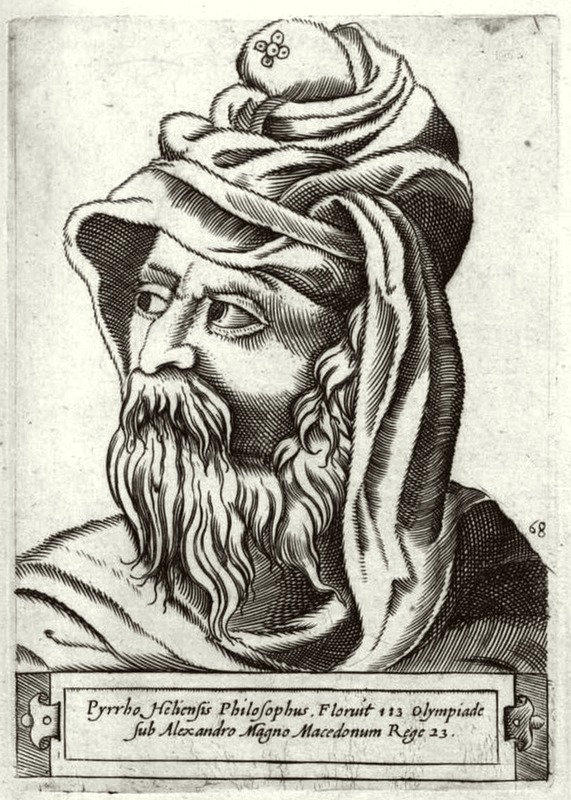

怀疑主义的创始人。他不写任何著作，不留任何体系，却用一生示范一种态度：对一切"独断"保持悬置，对任何"真相"不急着下结论。随亚历山大走到印度的皮浪，把哲学变成"不动心"的实践——从此，"怀疑"不再是知识的问题，而是生活的方式。
皮浪主义有三个基本动作：悬置判断（epoché）、对立理由（isosthenia）、不动心（ataraxia）。它不是"否定一切"，而是"拒绝过早肯定"。以下六个概念构成其思想骨架——从悬置出发，经现象、对举、怀疑，最终落到"怀疑者的生活"。点击卡片进入详细解读。
对任何"事情本质如何"不作判断。不肯定、不否定——让心灵悬在"不下结论"的开放状态。
悬置不是目的，不动心才是。当人不再被"对错执念"撕扯，心灵便获得宁静。
现象是直接显现的，真实是不可见的。皮浪说：我们只拥有前者，却总被要求承认后者。
对任何命题，总可以找到相等的相反论据。既然两难，不如不判断——这是怀疑主义的核心技术。
皮浪主义者不宣称"X是善/恶"——因为善恶本身属于"不可确定"之列。对价值判断也悬置。
怀疑主义不是虚无，而是"按现象生活"：照常吃饭、行事、遵守习俗——只是不对"真相"妄下断言。
皮浪本人不著一字——他的思想靠弟子的记录与后世怀疑主义者的整理传世。以下五部文献构成理解"皮浪主义"的路径：一部直接传承（蒂蒙）、三部塞克斯都·恩披里柯的著作与一部传记汇编。
皮浪的弟子蒂蒙用讽刺诗记录老师的言行——最接近皮浪本人的一手资料（残篇）。
怀疑主义最系统的教科书：悬置、论式、生活方式——皮浪主义传统的总纲。
逐一反驳逻辑、物理、伦理等领域的独断主张，是怀疑主义"进攻"的一面。
保存皮浪生平轶事的唯一系统文献：从画师到印度，从悬置到"不动心的生活"。
十个"制造悬置"的模式：从感官矛盾到立场差异——怀疑主义的方法论工具箱。
读第欧根尼·拉尔修卷九的皮浪传记（故事性强），再读《皮浪主义概要》第一卷前几章——它给出悬置的"感觉"。
读《皮浪主义概要》第二、三卷的"论式"（十个/五个），掌握怀疑的技术——并亲身体验"对每一命题找反例"。
把《反对独断论者》与斯多葛、亚里士多德的论证并置——怀疑主义的价值在于"迫使所有体系面对自己的假设"。
本站是怀疑主义创始人皮浪的导读。请注意：皮浪本人没有写任何著作，因此本站"作品页"呈现的是他的传承者（蒂蒙、塞克斯·恩披里柯、第欧根尼·拉尔修）的记录与系统化。核心概念页展开悬置、不动心、现象、势均力敌、无倚靠与怀疑者的生活。
皮浪主义常被误读为"什么都不信"。读进去会发现：它比任何独断都更"敢于面对不确定性"——它不急着让你信什么，而先让你看见"为什么还没有足够理由信"。这种"悬崖边的清醒"，在今天的信息时代，或许是皮浪最值得我们学习的姿态。